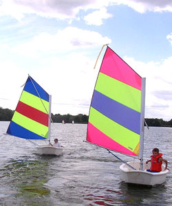

Blogging is my business!

| Home | Photos | Thoughts | Blog | Contact |
|
|
Blogging is my business! |
|
|
|
Hi and welcome to the most interesting blog around. Lots of new and fascinating updates about my life nearly every day.
27 Apr 2015 Ruuskii fell out of the house during the week. He went for a sniff out of the Juliet balcony in my bedroom and fell onto the bricks one floor below. It was only 10 feet, but he covered the distance in 0.5 seconds and whimpered for an hour afterwards. Unfortunately he is still limping. Boys went for a Maccy-D yesterday. Aden caused such a caffuffle I am unsure I will go again. He received the wrong free "Home" (from the film) toy. Anyway, eventually I persuaded him to go up to the counter and get a refund and/or an exchange. I was hoping he'd get the money but got a different toy instead. Though I was disappointed, he was happy. Also, the boys went sailing for the first time at on Saturday. I mean proper sailing, on an Oppie:  (picture doesn't not contain Kaelan and Aden). I will post photos of them soon. 12 Apr 2015 Admin assistant phone photos of the Hobbits. Barnard photos, also from the admin assistants phone. Not sure if the Barnard's will visit again. Zorro bit one of Ziggy's children. But in saying that, he did quieten them down a bit, for a minute of two. 07 Apr 2015 Aden lost his first tooth yesterday! He was very proud and promptly declared that another two were loose as well. 06 Apr 2015 Been in Croatia for last few days. Very nice place. Photos to follow shortly. ...and the weather is beautiful on my return. As one would expect. The disorder of the Hobbits is residing. My mojo is returning. 02 Apr 2015 Decided to go somewhere different. To recover. 01 Apr 2015 Oh how I wish the Hobbits were an April Fools joke. I am not returned to normal yet. The world is never the same after a visit by them. Sidney with his tubes and organs hanging out. Aden was quite perplexed when he saw. Nancy and her fermented ways. She was distilled in a different time! Quite an inebriated spirit, she spat at my windows most days. I did believe that ALL animals were noble. To some extent. But where did their nobility go? I have a tendency to be inclined that they never did have any. Their attitude is fiercest at meals times. I would throw out scraps for the foxes, but the poor things never stood a chance against these feral northerners. Hobawick should be raised!! Cleanse the Earth of these oinks. There should be exceptions to the "Animal Protection" rules that I am all for. I will petition to the Animal Societies that the Hobbits should be squashed. It is unfortunate but my elan vital would shine brighter, if that were the case. Oh, I must sit down. I am quite over-come thinking about these animal oddities. They are a bit like the Australian duck-billed platypus. Nothing remotely related to them and no-one has any idea where they came from! 30 Mar 2015 They have gone! I have been creeping around the house with locked doors and curtains drawn for 1 week. I saw them snuffling around the garden from the bathroom window 1 week ago today. I immediately went into "save my family" mode, as all good mothers would. I locked and bolted the doors. I locked and bolted the windows. I blocked all the toilets with a foul smelling poo. I asked the mouse in the garage to lock his little door [he did]. I started a blazing fire to stop any infringement down the chimney. They broke into the stables though, and lived their for a week. But the stables were designed for animals, so that is ok. I have ventured into the stables since they left, this morning. They are a mess, I admit. And I doubt any living animal will be able to stay in them again. Indeed, I will get them knocked down and start afresh. BUT ME AND MY FAMILY ARE SAFE! That is the most important fact. WE SURVIVED A VISIT BY THE HOBBITS! I am tired. Exhausted. I will recuperate slowly over the coming days/weeks. 22 Mar 2015 Great party today! Kaelan and his friends (and Aden) were partying like they'd never done it before. Especially Freddy. He was nuts. Luke arrived. The real Luke Sky-Walker. He wow-ed the kids with his magic and party games. Darth Vader was there as well. So was Yoda. Though they weren't quite as animated as the Luke. Thats probably because they were card-board cut-outs. But they still impressed every one. Party was in Boldre. As in shoulder. Kids are happy in the New Forest. Nothing can go wrong! Can it? 21 Mar 2015 Boys are going sailing this avo! For the first time. Well they are seeing the sailing club building, so they may not actually go in a boat. But that is not the point. Don't say they aren't posh. 19 Mar 2015 Kaelan had his tooth knocked out by a "friend" last week. While watching a cross country race. The two of them apparently got too excited. His "friend" raised his arms and on the way up they collided with Kaelan's jaw. Aden has a special reading chair. I will post photos soon. 16 Mar 2015 Went to a disco on Saturday night. I was doing proper dancing. Creative dancing at its best. Yeh. Lots of people were taking videos of me. They must want to copy me. Yeh. Me and Kate Bush are stars of new contemporary dance. I can Wuther like no other. I don't mind being an inspiration for you. Going to get a pig soon. A big fat one. Then after that some donkeys. Chickens are a definite. And a cow. Sheep as well. Hope they can all get on in the same field! That shouldn't cause a problem. They were all were happy on the Ark. I'll need to hire some more staff. On the other hand, that costs money, so I think I'll just get the existing staff to work twice as hard. Yeh.08 Mar 2015 I got lost in Buenos Aires. Honest. I was with a group from the cruise ship and they left me while I was taking photos. I was on my own for nearly 30 minutes. What were they up to? Surely they missed me? Eventually the aa turned up give me a whistle and thought it would be ok. I was quite upset. I thought no-one cared. He said I should have been paying attention. I nearly punched him. Idiot. 07 Mar 2015 Some photos from our recent hols. 06 Mar 2015 HAPPY BIRTHDAY KAELAN my booboo!! 8 is half way to 16! He is almost grown up!?!? How can that be? Only yesterday he was in nappies. Eh I almost mean that literally. Though he hasn't had a poo incident for about a 6 months. Thank goodness. Interestingly, I found out about reusable nappies today. I only used disposable for my kids. Perhaps I should get some for Kaelan. I'm sure he wouldn't mind. 05 Mar 2015 Spring is in the air. I can feel it in my water. 04 Mar 2015 Phew, what a holiday! Sunny and freezing all in one hol. Antartica was amazing, really beautiful (though I am #1, of course), great fun (kids went to the "Fun Factory") nearly every day. really cold (the aa made a snowman on the ship deck), So I can now add some more countries to my list: My Countries. I must admit I have put on a couple of pounds during the cruise. Too much delish food. The kids enjoyed meeting Dejan (Croation waiter), Roco (also a Croation waiter), Mr Penguin (another waiter) and Mr Washee Washee (some Asian guy who hung around the entrance to the Oceanview Restaurant spraying a cleansing fluid onto everyones hands - he liked dancing and singing PSY's Gangnam Style). Went to lots of shows on the boat. Mikolosh was very interesting with his science talks and the dancing shows were amazing. There was a juggler, who I wasn't so keen on, but he was very enthusiastic, only dropped his balls once (or was it twice). Photos to follow soon! Here is a list of animals we saw:
03 Mar 2015 The first big birthday of the year is in 3 days time. DO NOT FORGET. 12 Feb 2015 Before we go on hols... here is a list of animals and who wants what: Animals for Village the Zoo. In case you can't make out the headings on the scan, here they are:
11 Feb 2015 Went to the show of the year so far last night, a double bill: "The Wind in the Willows" and "Alice in Wonderland". Kaelan was an "extra", well to be honest, the whole of year 3 were extras. So I should not be too disappointed he wasn't the lead. And he did extra with guile! Aden was with me. He quite enjoyed the first show, but during the second one at every lull he would blast out: "Is it finished yet?" A tad embarressing, but he is my baby booboo. Off to Antarctica tomz! 09 Feb 2015 What did the British Spitfire say to the German bi-plane? Bye plane!! That is Kaelan's latest joke. Not bad! Aden's latest trick is to play the guitar. yes, he has started playing his first tune. Then he is going to learn how to tune the guitar. Seems the wrong way round to me, but I have helped him tune it previously. 08 Feb 2015 Antarctica itinerary. The numbers are temperatures. Expecting it to be a bit peaky at the South Pole. Could be wrong. But I will go with my hunch on this one. Bought some anti-cold clothes today. 06 Feb 2015 Aden struggles to have a poo now-a-days. Not because he has constipation. But because of the ants. Yes, apparently ants live in the toilet. He stands up to have a poo. Until you assure him there are no ants. 03 Feb 2015 SNOW this morning! Yipee. Mostly gone by this evening :-( Lots of snow in Antarctica! Lots of work being done on the house at the moment. The attic is developing into a room. 25 Jan 2015 Kaelan is reading at the moment. In fact that is all he does. Sometimes I think I only have one child: Aden! Don't worry, Aden makes up for Kaelan, in noise and naughtiness. Then, when Kaelan does go for it, it is like having a 2 year old. So much so, I bought some dummies for my booboos recently. To try and shut them up. 18 Jan 2015 Going on holiday soon. Antarctica! No joke. Holiday after that is to MARS! Misc Phone Photos. Also, I fell on some rocks today, while at beach. Bloody seaweed. Anyway, my ass saved me. It is big enough to catch a small planet! 17 Jan 2015 Aden missed Kaelan last night, he had to spend the first part of the night with me. Poor thing. 16 Jan 2015 Kaelan is playing Colditz at his school tonight. Hope he isn't too scared! They play the game in the pitch dark and I know my booboos get frightened easily. Afterwards the competitors stay in the school over-night! The game consists of the the pupils trying to ring a bell that is protected by the staff. All the game is played outside and no torches allowed! Sounds exciting but I think Kaelan would be better tucked up in bed in his bedroom with a bottle of milk. 11 Jan 2015 The boys started playing in their Lego building today. It has been purpose built for them to enjoy all their Lego from Christmas. Not that they are spoilt or anything. 07 Jan 2015 Kaelan has picked up the dubious habit of speaking in a quasi northern accent. "Where's me shoes?" Whats for me breakfast?". I am refraining from saying anything incase it encourages him. However, where is this behaviour coming from? 06 Jan 2015 Boys are back to school tomorrow! They have much to learn. Though I don't think they think that. I know everything. 04 Jan 2015 Aden was a bit mischevious today. He set up traps for me and Kaelan to be surprised with. One was very lovely, a drawing of some flowers, he left it in the cutlery drawer. However, dropping teddys from above his bedroom door was a bit more naughty. 01 Jan 2015 Happy New Year to you all! Don't forget! The most important thing for you to concentrate on this year is me! Christmas Photos. |
{kind=link}
{kind=link}